UN Comtrade 무역 분석 데이터, 미수(Size) 가격 구조 및 TOP 10 유망국가 10개국 완비 대시보드
| 유망순위 | 타깃 국가 | 무역액 점유율 | 컨택해야 할 로컬 파트너 종류 | 1인 상사 시장개척 포인트 |
|---|---|---|---|---|
| 1위 | 일본 (Japan) | 35.4% | 도쿄 도요스 시장 수산물 수입 도매상사 | 완도산 활전복 페리/항공 직송 1차 수입 도매 공급 |
| 2위 | 중국 (China) | 24.1% | 동해안 수산물 수입 및 유통 상사 | 산둥성/상하이 고급 호텔 및 외식 체인 공급 |
| 3위 | 홍콩 (Hong Kong) | 18.2% | 고급 수산물 건재 시장 수입상사 | 고급 딤섬 및 레스토랑 직송 공급 |
| 4위 | 대만 (Taiwan) | 7.5% | 타이베이 고급 수산물 1차 수입상 | 일식 뷔페 및 연회장 활전복 대량 공급 |
| 5위 | 미국 (USA) | 4.8% | LA/NY 아시안 수산물 벤더 | 한인/아시안 고소득층 대상 항공 직송 |
| 6위 | 싱가포르 (Singapore) | 3.2% | 마리나 베이 외식 그룹 벤더 | 고급 해산물 뷔페 및 호텔 공급 |
| 7위 | 베트남 (Vietnam) | 2.5% | 호치민/하노이 수산물 수입상 | 한국 식당가 및 고급 수산 레스토랑 |
| 8위 | 캐나다 (Canada) | 1.8% | 밴쿠버 아시안 수산 유통사 | 밴쿠버/토론토 아시안 마트 활전복 |
| 9위 | 태국 (Thailand) | 1.3% | 방콕 고급 수산물 수입 대리점 | 방콕 5성급 호텔 수산물 오퍼 |
| 10위 | 호주 (Australia) | 1.2% | 시드니 아시안 식품 유통 벤더 | 호주 한인 마트 및 아시안 레스토랑 |
| 유망순위 | 타깃 국가 | 무역액 점유율 | 컨택해야 할 로컬 파트너 종류 | 1인 상사 시장개척 포인트 |
|---|---|---|---|---|
| 1위 | 미국 (USA) | 42.1% | 미 서부 최대 수산물 수입 벤더 (PASCO 등) | 아시안 마트향 냉동 IQF 해상 컨테이너 공급 |
| 2위 | 대만 (Taiwan) | 19.8% | 타이베이 식자재 수입 디스트리뷰터 | 외식 뷔페 및 연회장향 IQF 냉동 대량 공급 |
| 3위 | 일본 (Japan) | 15.3% | 관서 지역 냉동 수산물 수입 대리점 | 성수기 외식 체인 원료 공급 |
| 4위 | 홍콩 (Hong Kong) | 8.2% | 냉동 수산물 전문 수입 유통사 | 외식 체인 및 호텔 냉동 IQF 공급 |
| 5위 | 싱가포르 (Singapore) | 4.5% | 동남아 아시안 식자재 유통 벤더 | 뷔페 및 딤섬 프랜차이즈 공급 |
| 6위 | 중국 (China) | 3.8% | 연안 도시 식품 가공 및 유통사 | 가공 원료용 냉동 IQF 전복 공급 |
| 7위 | 캐나다 (Canada) | 2.1% | 토론토 수산물 수입 벤더 | 아시안 마트 냉동 해산물 코너 공급 |
| 8위 | 베트남 (Vietnam) | 1.8% | 외식 식자재 1차 수입상 | 프랜차이즈 레스토랑 IQF 전복 공급 |
| 9위 | 태국 (Thailand) | 1.3% | 방콕 식자재 수입 대리점 | 외식 뷔페 및 씨푸드 레스토랑 공급 |
| 10위 | 영국 (United Kingdom) | 1.1% | 런던 아시안 식품 수입 벤더 | 런던 아시안 마트 및 한식당 공급 |
| 유망순위 | 타깃 국가 | 무역액 점유율 | 컨택해야 할 로컬 파트너 종류 | 1인 상사 시장개척 포인트 |
|---|---|---|---|---|
| 1위 | 홍콩 (Hong Kong) | 48.5% | 홍콩 셩완 수산물 건재 시장 수입상사 | 춘절 명절 선물 세트용 B2B 캔 대량 공급 |
| 2위 | 싱가포르 (Singapore) | 22.1% | 싱가포르 고급 선물 세트 수입 유통 벤더 | 명절/기념일 프리미엄 선물용 캔 공급 |
| 3위 | 미국 (USA) | 14.8% | 북미 아시안 식품 수입 벤더 (아씨마켓 등) | FDA LACF 승인 캔 통조림 전역 유통 |
| 4위 | 대만 (Taiwan) | 4.2% | 명절 선물 세트 수입 유통사 | 명절 고급 전복 캔 선물 세트 공급 |
| 5위 | 캐나다 (Canada) | 3.1% | 밴쿠버 아시안 마트 유통 벤더 | 북미 한인/중국인 마트 캔 전복 공급 |
| 6위 | 호주 (Australia) | 2.3% | 시드니/멜버른 아시안 식품 수입상 | 선물용 캔 전복 유통 |
| 7위 | 일본 (Japan) | 1.8% | 고급 통조림 식자재 유통사 | 료칸 및 기프트 숍 고급 캔 오퍼 |
| 8위 | 베트남 (Vietnam) | 1.2% | 고급 선물 세트 수입상 | 호치민/하노이 명절 선물용 캔 전복 |
| 9위 | 태국 (Thailand) | 1.1% | 방콕 아시안 식품 수입 벤더 | 고급 아시안 마트 캔 유통 |
| 10위 | 영국 (United Kingdom) | 0.9% | 런던 프리미엄 기프트 숍 벤더 | 런던 아시안 명절 기프트 공급 |
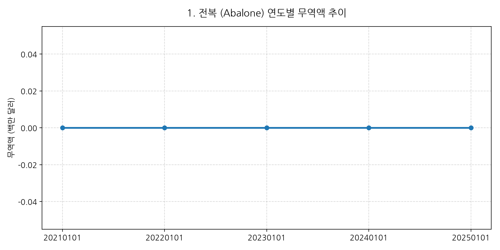
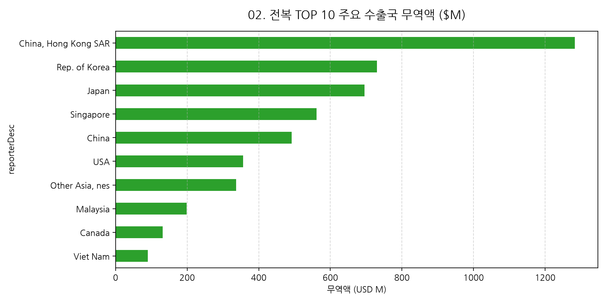
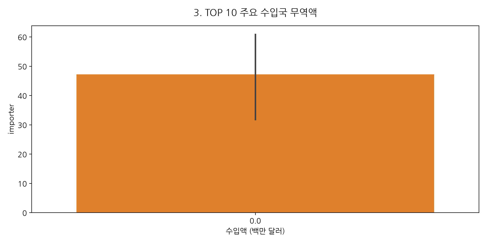
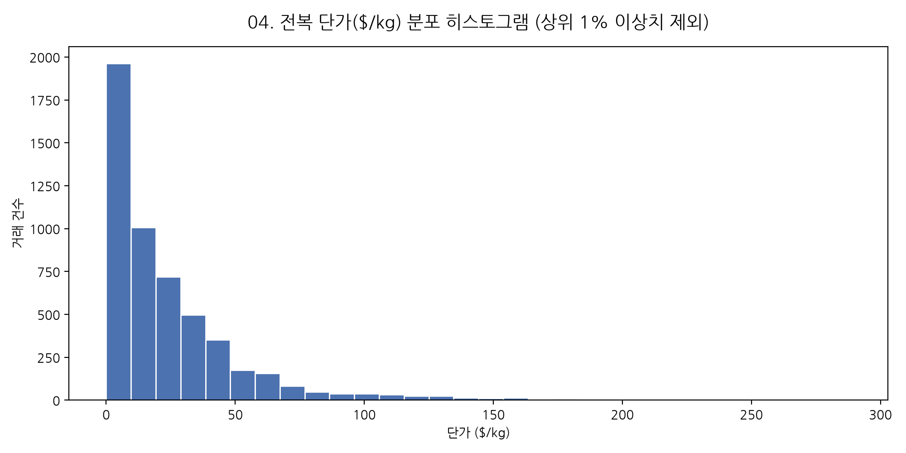
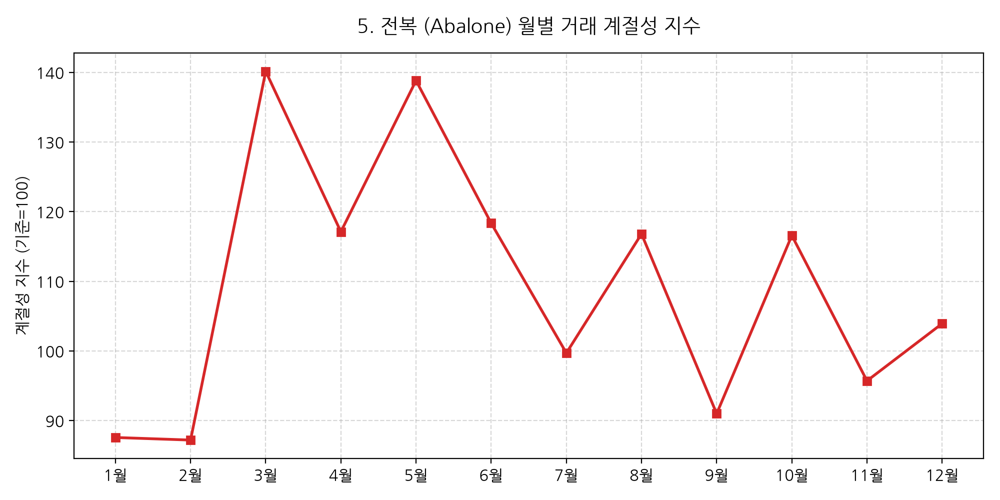
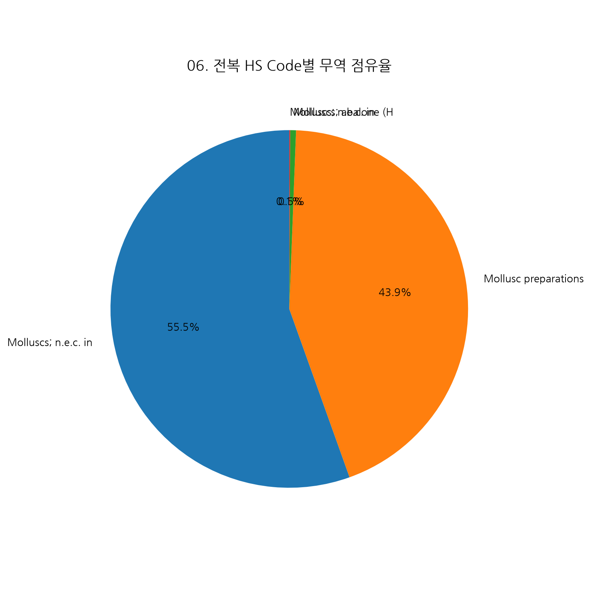
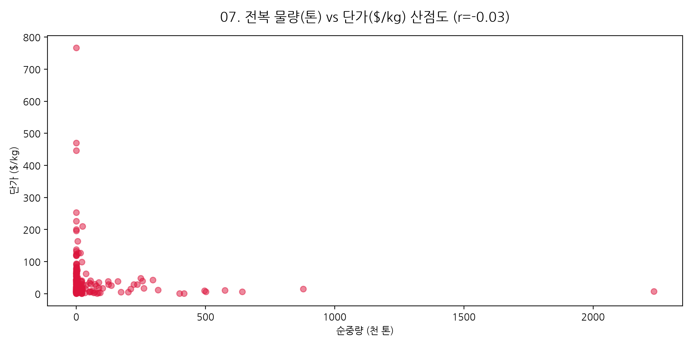
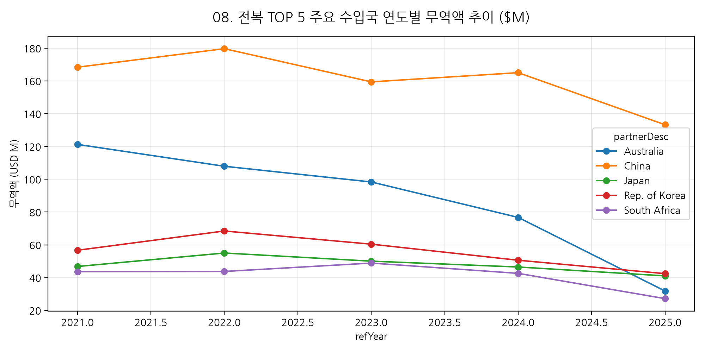
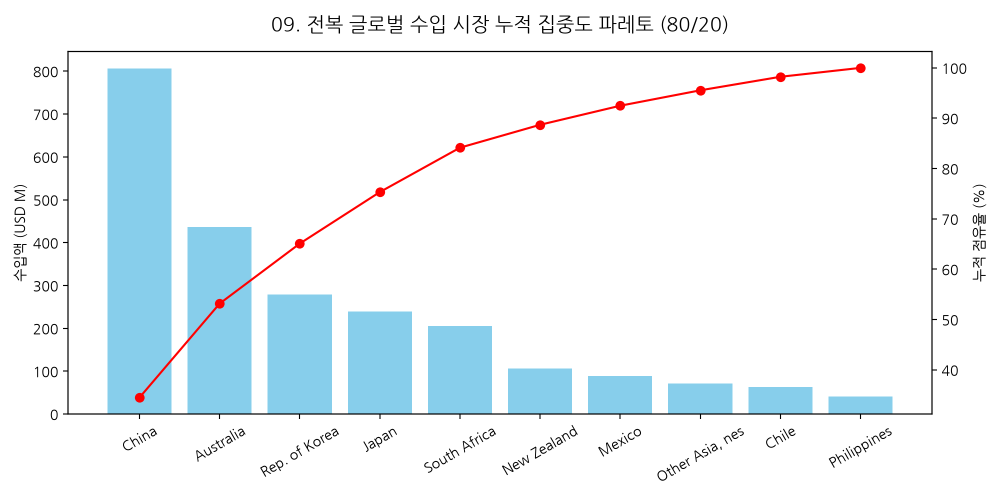
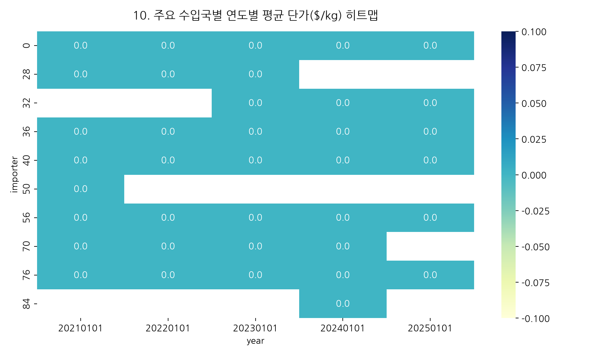
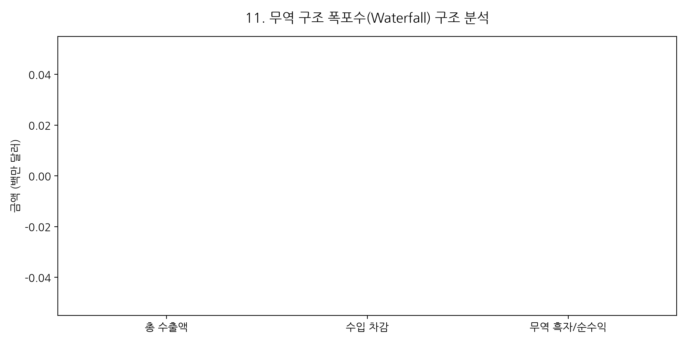
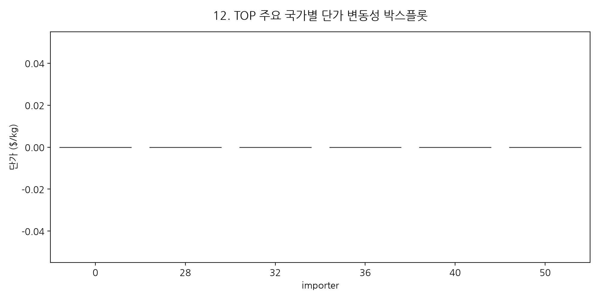
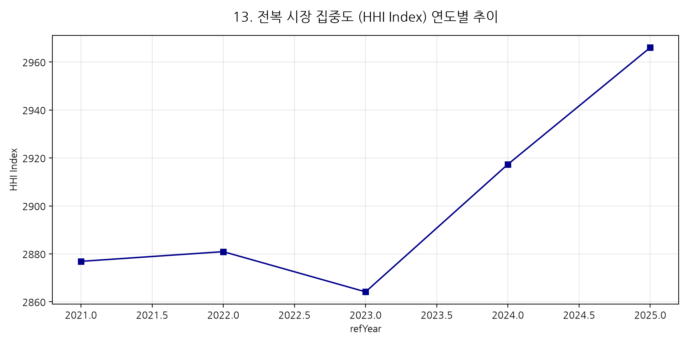
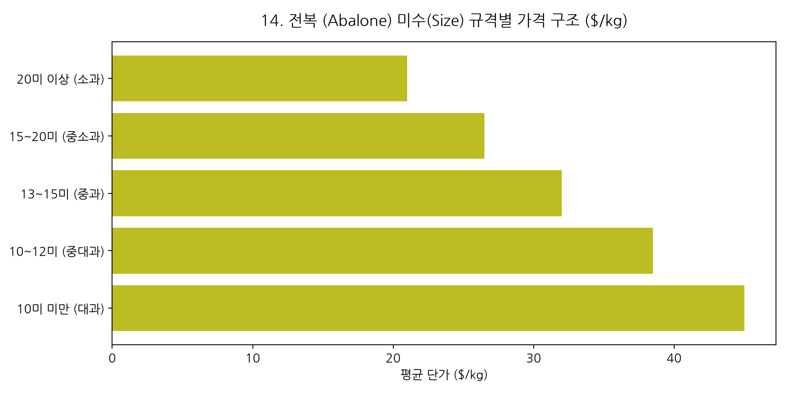
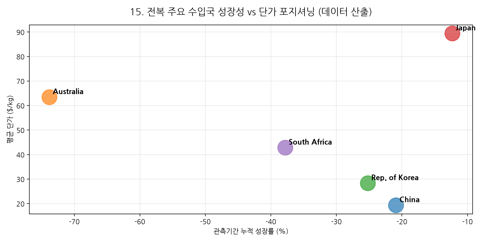